Design a Key-Value Store
Dynamo/Cassandra jaisa distributed KV store — CAP trade-off, quorum, vector clocks, gossip, hinted handoff, Merkle trees aur LSM storage engine.
Introduction
Key-value store ek non-relational DB hai jahan har unique key ke saath ek value store hoti hai. Key plain text ("last_logged_in_at") ya hashed (253DDEC4) ho sakti hai; value string, list, object — kuch bhi, opaque. Popular examples: Amazon DynamoDB, Memcached, Redis. Hum aisa KV store design karenge jo do operations support kare:
put(key, value) // key ke saath value insert
get(key) // key ki value laoStep 1: Problem aur scope
Perfect design nahi hota — har design read/write/memory usage aur consistency/availability ke beech trade-off hai. Notes ke characteristics:
- Key-value pair chhota: < 10 KB.
- Big data store kar sake.
- High availability — failures ke dauran bhi jaldi respond kare.
- High scalability — bade data set ke liye scale ho.
- Automatic scaling — traffic ke hisaab se servers add/delete automatic.
- Tunable consistency.
- Low latency.
Single server key-value store
Simple: poora data in-memory hash table mein. Memory access fast hai, lekin memory limited. Optimizations:
- Data compression.
- Sirf frequently used data memory mein, baaki disk pe.
Phir bhi ek server jaldi capacity hit karega → distributed KV store (aka distributed hash table) chahiye.
CAP theorem
Distributed system design karte waqt CAP samajhna zaroori hai. CAP theorem kehta hai ki distributed system ek saath in teeno mein se do se zyada guarantees nahi de sakta:
- Consistency: saare clients ek hi time pe same data dekhein, chahe kisi bhi node se connect hon.
- Availability: har request ko response mile, chahe kuch nodes down hon.
- Partition tolerance: partition = do nodes ke beech communication break. System network partition ke bawajood chalta rahe.
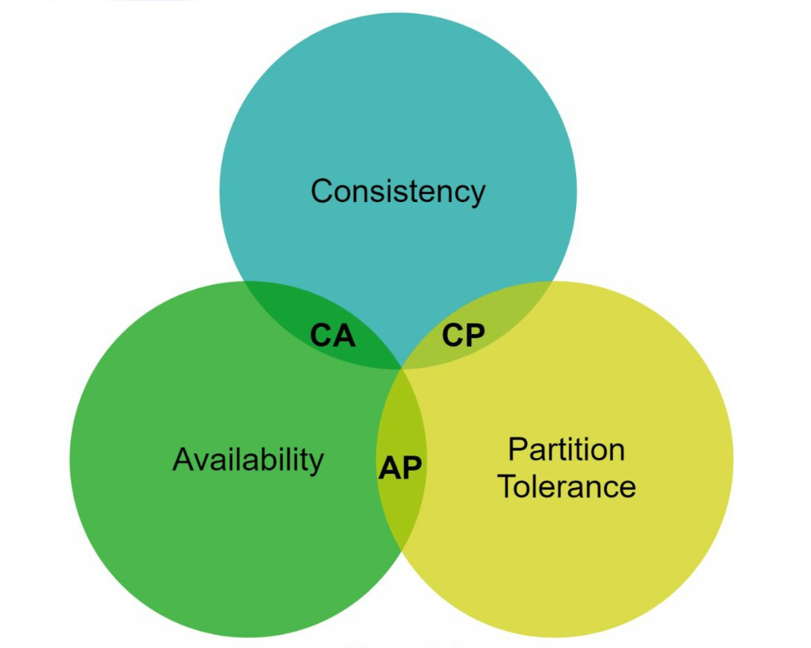
| Type | Kya choose kiya | Kya chhoda | Example |
|---|---|---|---|
| CP | Consistency + Partition tolerance | Availability | Bank balance — galat balance dikhane se better error dikhana |
| AP | Availability + Partition tolerance | Consistency (eventual) | Shopping cart, social feed — stale data chal jaata hai |
| CA | Consistency + Availability | Partition tolerance | Real distributed world mein exist nahi kar sakta |
Kyun CA exist nahi karta? Network failure unavoidable hai, to distributed system ko partition tolerate karna hi padega. Real choice sirf ye hai: partition hone pe C ya A.
Real-world example
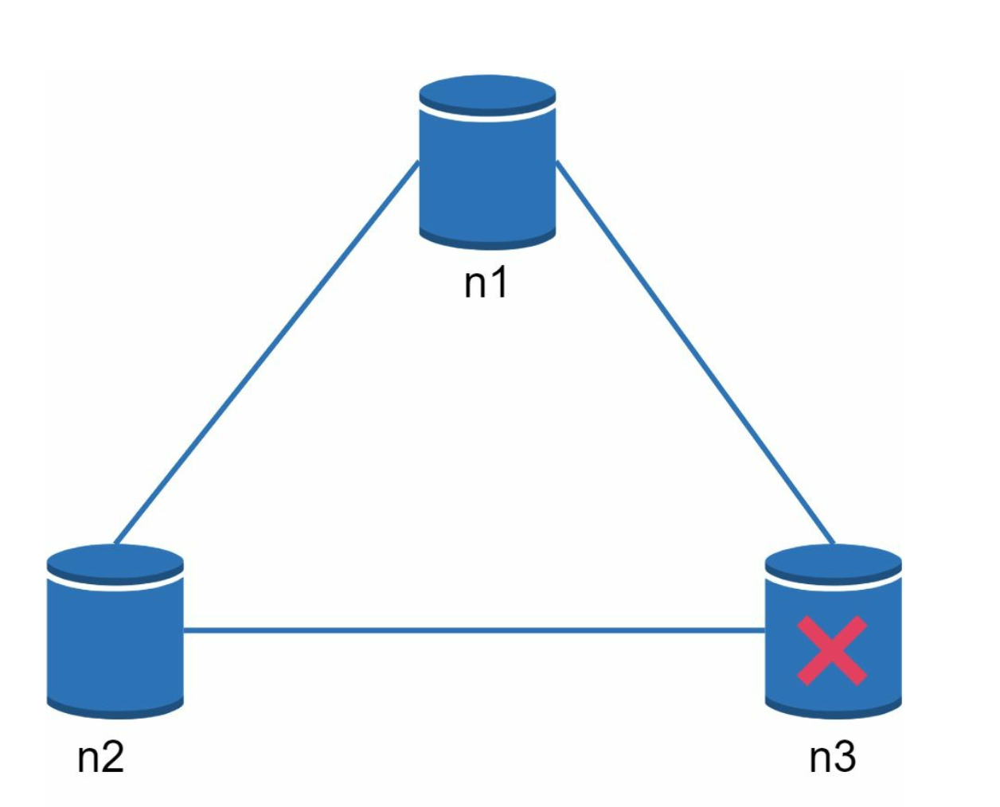
- CP choose kiya: n1 aur n2 pe saare writes block karo taaki inconsistency na ho → system unavailable. Bank systems yahi karte hain.
- AP choose kiya: reads chalte rahenge (stale ho sakte hain), n1/n2 writes accept karte rahenge, partition theek hone pe data n3 ko sync.
System components
Ye design Dynamo, Cassandra aur BigTable jaise popular systems pe based hai. Core components: data partition, replication, consistency, inconsistency resolution, failures handle karna, system architecture, write path, read path.
1. Data partition
Bade application mein poora data ek server pe nahi aata. Do challenges: data evenly baantna, aur nodes add/remove pe minimum movement. Solution: consistent hashing (Chapter 05).
- Automatic scaling: load ke hisaab se servers add/remove.
- Heterogeneity: server ke virtual nodes uski capacity ke proportional — bada server, zyada vnodes.
2. Data replication
High availability aur reliability ke liye data N servers pe asynchronously replicate. N tunable parameter hai. Key ki position se ring pe clockwise chalo aur pehle N servers pe copies rakho.
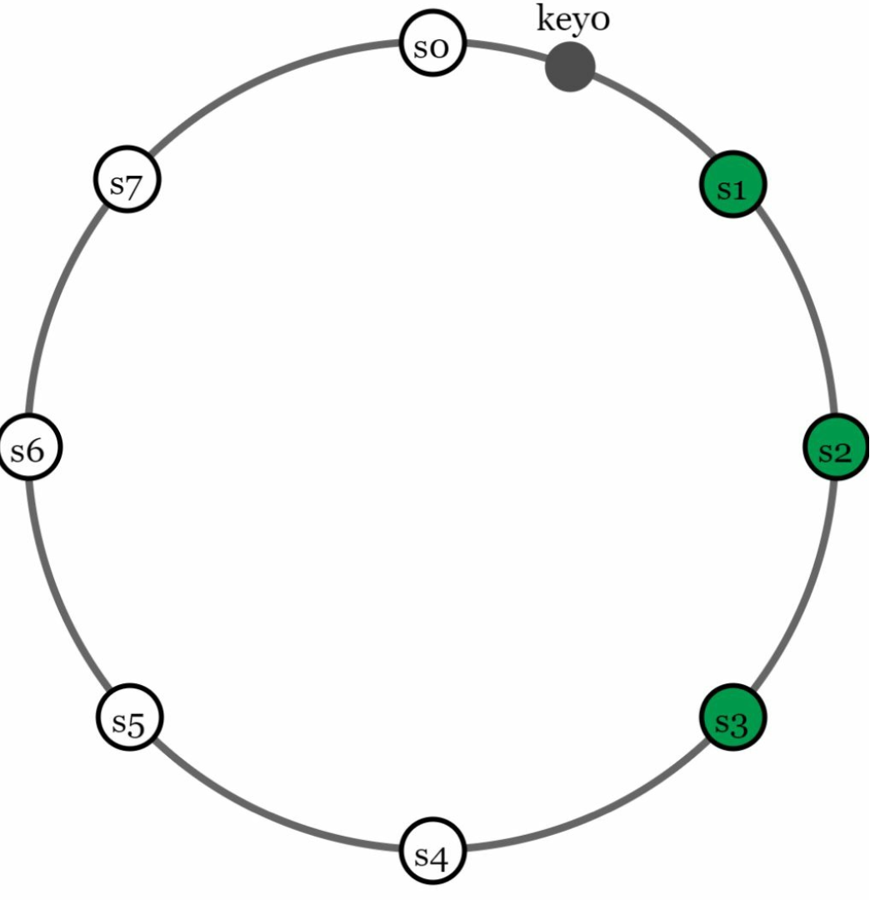
Virtual nodes ke saath dhyan: pehle N nodes kam physical servers ke ho sakte hain. Isliye clockwise walk mein sirf unique physical servers choose karo. Aur power outage, network issue, natural disaster se bachne ke liye replicas alag data centers mein rakho (high-speed network se connected).
3. Consistency: Quorum consensus
- N = replicas ki count.
- W = write quorum — write tab successful jab W replicas ack karein.
- R = read quorum — read tab successful jab kam se kam R replicas respond karein.
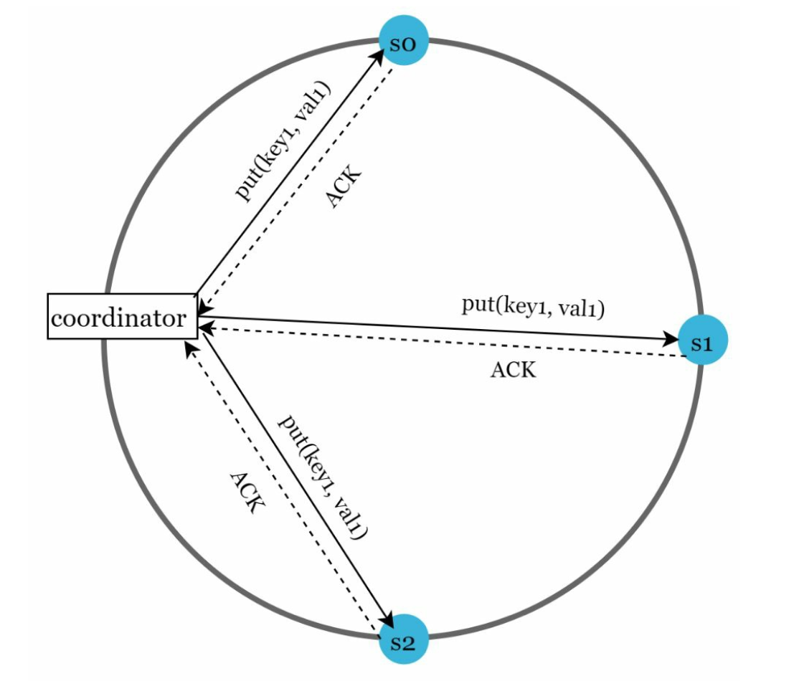
put(key1, val1) teen replicas s0, s1, s2 ko bhejta hai (solid arrows) aur har ek ACK wapas bhejta hai (dashed). W = 1 ho to coordinator pehla ACK milte hi client ko success bol dega; baaki ACKs ka wait nahi.W = 1 ka matlab ye nahi ki data ek hi server pe likha gaya — matlab coordinator ko sirf ek ack ka wait karna hai. W, R, N ka config latency vs consistency ka classic trade-off hai: W ya R = 1 → fast (coordinator sirf sabse fast replica ka wait karta hai); W ya R > 1 → better consistency, lekin sabse slow replica ka wait.
| Config | Matlab |
|---|---|
| R = 1, W = N | Fast reads ke liye optimized |
| W = 1, R = N | Fast writes ke liye optimized |
| W + R > N | Strong consistency guaranteed (usually N = 3, W = R = 2) — read aur write sets mein kam se kam ek overlapping node jiske paas latest data hai |
| W + R ≤ N | Strong consistency guaranteed nahi |
Consistency models
- Strong: har read sabse latest write ki value return kare. Client kabhi out-of-date data nahi dekhta. Usually replicas ko naye reads/writes se rok ke achieve hota hai — highly available systems ke liye ideal nahi.
- Weak: subsequent reads latest value na bhi dekhein.
- Eventual: weak ka specific form — kaafi time milne pe saare updates propagate ho jaate hain aur replicas consistent. Dynamo aur Cassandra eventual consistency adopt karte hain; concurrent writes se aayi inconsistent values client reconcile karta hai.
ONE, QUORUM, ALL, LOCAL_QUORUM. RF=3 ke saath write QUORUM + read QUORUM = 2 + 2 > 3 → strong read-your-writes. Ye exactly W + R > N formula hai.4. Inconsistency resolution: Versioning aur vector clocks
Replication availability deta hai lekin replicas ke beech inconsistency laata hai. Versioning = har modification ek naya immutable version. Pehle conflict kaise banta hai dekho:
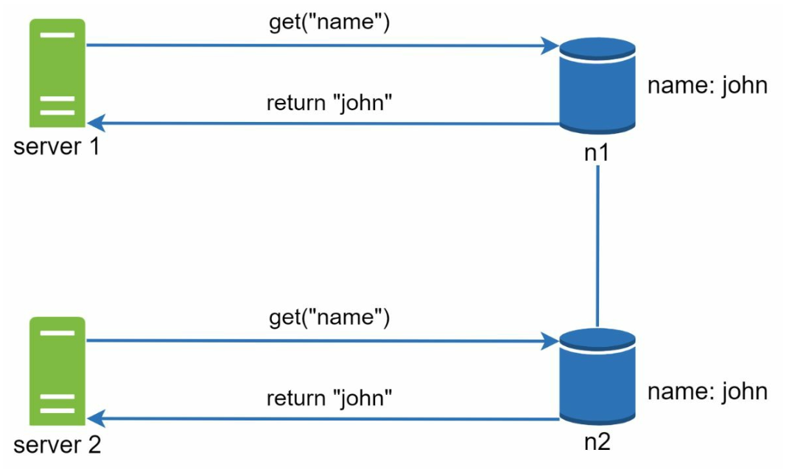
name: john. Server 1 aur Server 2 dono get("name") karte hain aur dono ko same value "john" milti hai — consistent state.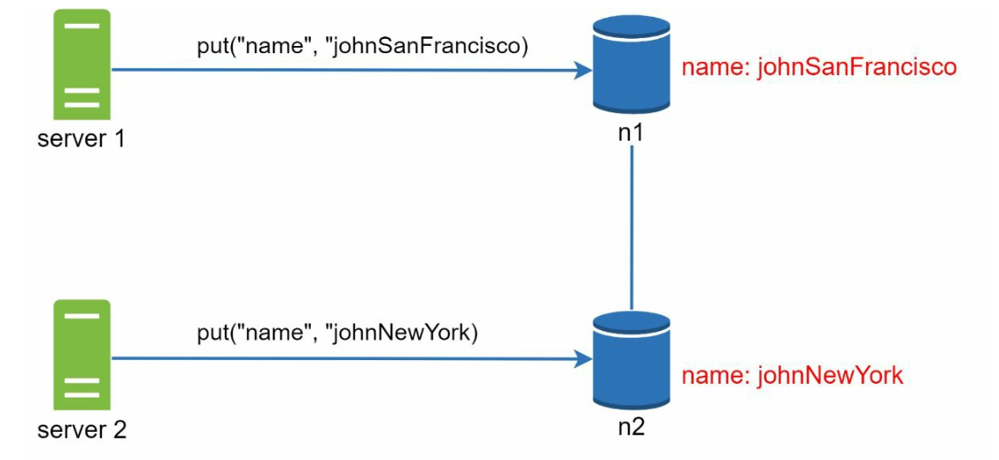
put("name", "johnSanFrancisco") aur Server 2 n2 pe put("name", "johnNewYork") karta hai (red values). Do conflicting versions v1 aur v2 ban gaye — kaun sahi? Original value 'john' ko dono ne overwrite kiya, isliye purani ignore ho sakti hai, lekin in dono ke beech koi clear winner nahi.Is conflict ko detect aur resolve karne ke liye vector clock.
Vector clock kaise kaam karta hai
Vector clock ek [server, version] pairs ki list hai jo data item ke saath attached hai: D([S1, v1], [S2, v2], …, [Sn, vn]). Data item D server Si pe likha gaya to:
- Agar
[Si, vi]exist karta hai →viincrement. - Warna naya entry
[Si, 1]banao.
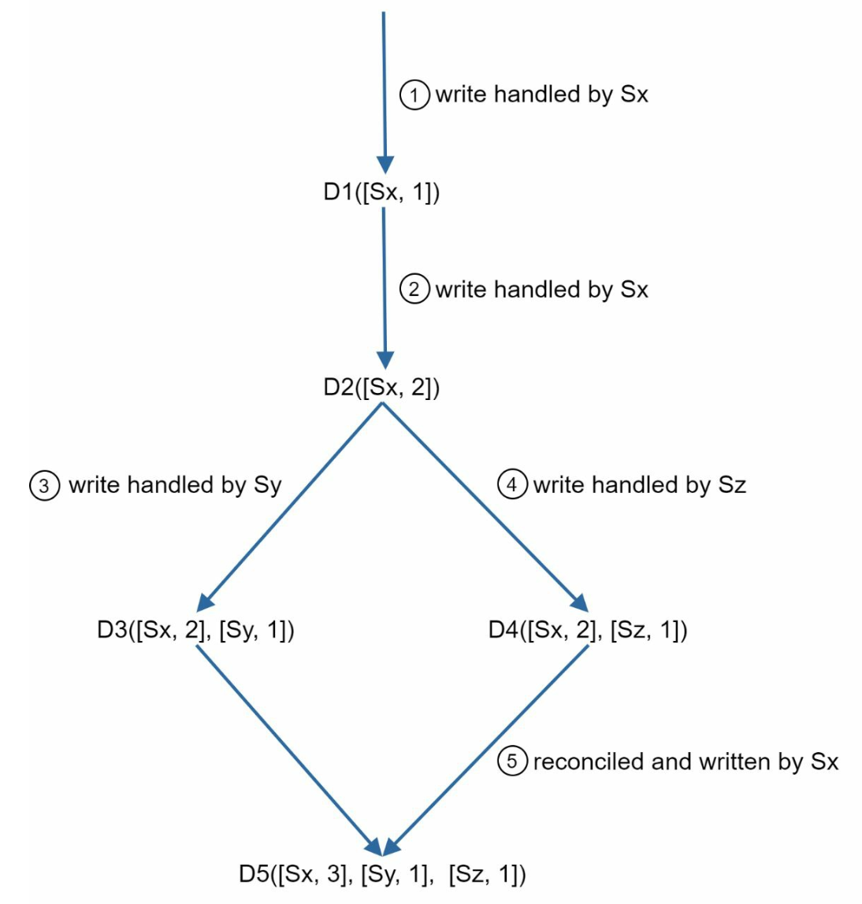
D1([Sx,1]). ② Doosra client D1 padh ke update karta hai, phir Sx → D2([Sx,2]) (D2 ne D1 ko overwrite kiya). ③ Ek client D2 update karta hai, Sy handle → D3([Sx,2],[Sy,1]). ④ Doosra client bhi D2 update karta hai, Sz handle → D4([Sx,2],[Sz,1]). D3 aur D4 conflict mein hain. ⑤ Client dono padh ke reconcile karta hai, Sx likhta hai → D5([Sx,3],[Sy,1],[Sz,1]).- Ancestor (no conflict): X, Y ka ancestor hai agar X ke saare counters Y ke counters se ≤ hain. e.g.
D([s0,1],[s1,1])is ancestor ofD([s0,1],[s1,2]). - Siblings (conflict): agar Y mein koi counter X se kam hai aur X mein koi counter Y se kam — e.g.
D([s0,1],[s1,2])vsD([s0,2],[s1,1]). - Conflict detect hone pe resolution application/client logic karta hai (e.g. shopping cart ko merge kar do).
Downsides: (1) client ke liye complexity — conflict resolution logic likhna padta hai. (2) [server, version] pairs tezi se badh sakte hain → threshold set karo, purane pairs hatao. Isse descendant relationship sahi detect na ho to inefficiency, lekin Dynamo paper ke mutabik production mein Amazon ko ye problem nahi aayi.
5. Failures handle karna
a. Failure detection: Gossip protocol
Sirf isliye kisi server ko down maan lena kaafi nahi ki ek doosre server ne bola. Usually kam se kam do independent sources chahiye. All-to-all multicasting simple hai lekin bahut servers pe inefficient. Better: decentralized gossip protocol:
- Har node ek membership list rakhta hai: member IDs + heartbeat counters.
- Har node periodically apna heartbeat counter badhata hai.
- Har node periodically random nodes ko heartbeats bhejta hai, jo aage aur nodes ko propagate karte hain.
- Heartbeat milne pe membership list latest info se update.
- Kisi member ka heartbeat predefined period se zyada nahi badha → offline.
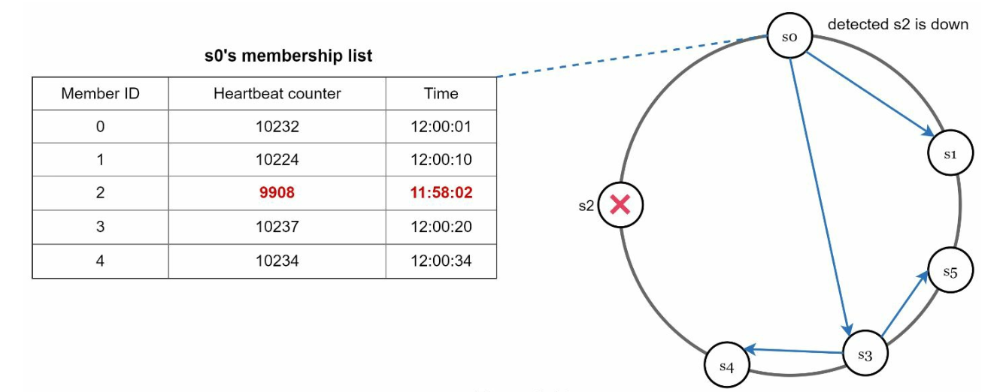
b. Temporary failures: Sloppy quorum + hinted handoff
Strict quorum mein reads/writes block ho sakte hain. Availability ke liye sloppy quorum: quorum enforce karne ki jagah, ring pe pehle W healthy servers writes ke liye aur pehle R healthy reads ke liye. Offline servers ignore.
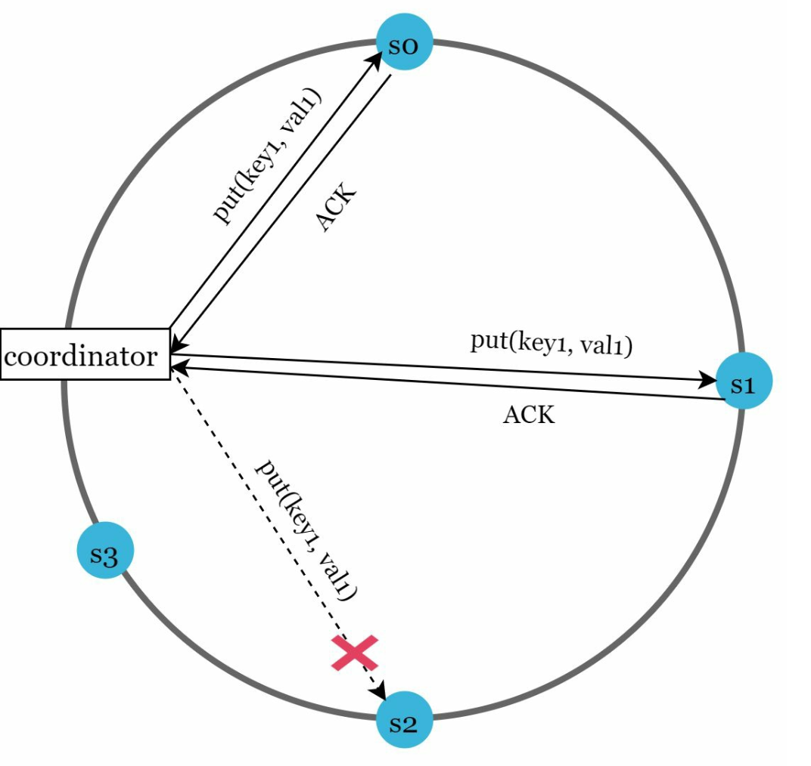
put(key1, val1) s0, s1 ko bhejta hai — ACKs aate hain. s2 tak ka dashed arrow red ✗ pe ruk gaya (s2 unavailable). Isliye s3 temporarily s2 ki jagah reads/writes handle karega.Hinted handoff: s3 data ke saath ek "hint" rakhta hai ki ye s2 ka hai. s2 wapas aane pe s3 changes s2 ko push kar deta hai → consistency restore.
c. Permanent failures: Anti-entropy with Merkle trees
Replica permanently unavailable ho to anti-entropy protocol se replicas sync karo — replicas ka data compare karke har replica ko latest version pe laana. Inconsistency detect karne aur kam data transfer karne ke liye Merkle tree (hash tree): har non-leaf node children ke hashes ka hash; leaf = data block ka hash. Bade data structures ka verification efficient aur secure.
Example: key space 1 se 12. Highlighted (red) boxes inconsistency dikhate hain.
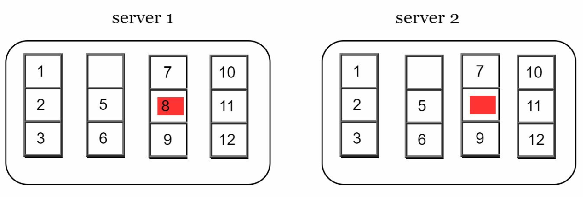
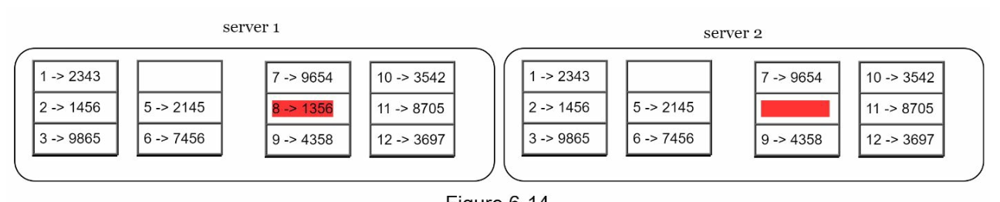
1 → 2343, 2 → 1456... Server 1 pe 8 → 1356 (red), Server 2 pe key 8 ka hash missing/different (red bar). Baaki sab hashes same.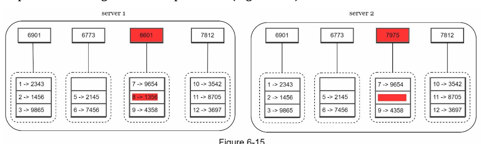
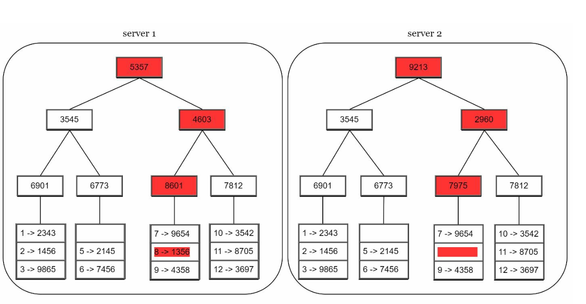
Sync: root hashes compare karo. Same → replicas consistent. Alag → left child, phir right child compare karo, recursively, jab tak inconsistent buckets na mil jaayein. Sirf un buckets ko sync karo. Transfer data differences ke proportional hai, total data ke nahi. Real system mein bucket size bada hota hai — e.g. 1 million buckets per 1 billion keys, to har bucket mein ~1000 keys.
6. Data center outage
Power outage, network outage, natural disaster se poora DC ja sakta hai. Data ko multiple data centers mein replicate karo — ek DC poora down ho to bhi users doosre DC se access kar sakein.
System architecture
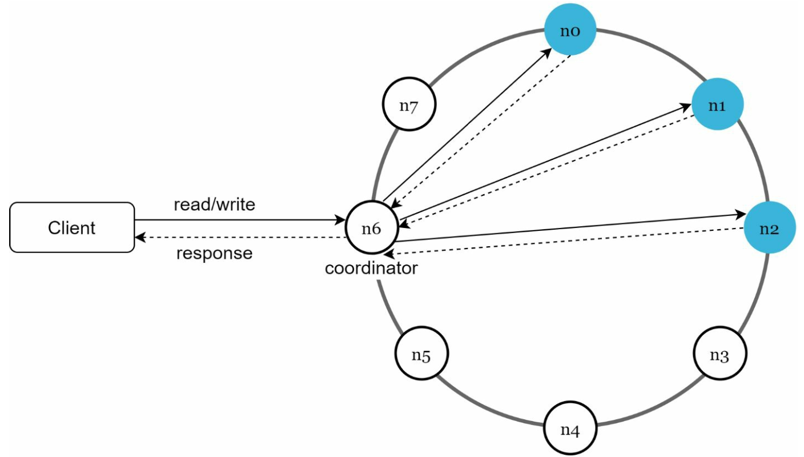
- Client simple APIs se baat karte hain:
get(key),put(key, value). - Coordinator client aur KV store ke beech proxy node hai.
- Nodes consistent hashing se ring pe distributed.
- System completely decentralized — nodes add/move automatic.
- Data multiple nodes pe replicated.
- No SPOF — har node ki same responsibilities (client API, failure detection, conflict resolution, failure repair, replication, storage engine).
Write path (Cassandra-based)
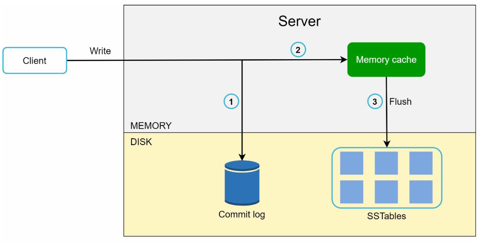
SSTable (Sorted-String Table) = sorted <key, value> pairs ki list. Commit log append-only aur SSTable flush sequential hai — isliye writes bahut fast (Chapter 02: disk seeks avoid karo!). Ye LSM-tree design hai.
Read path
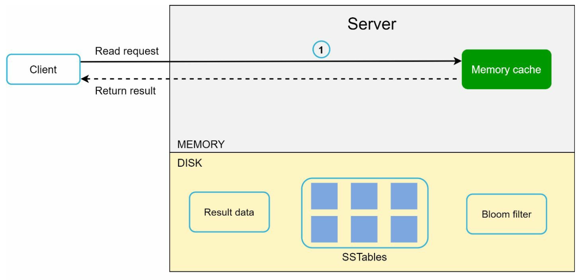
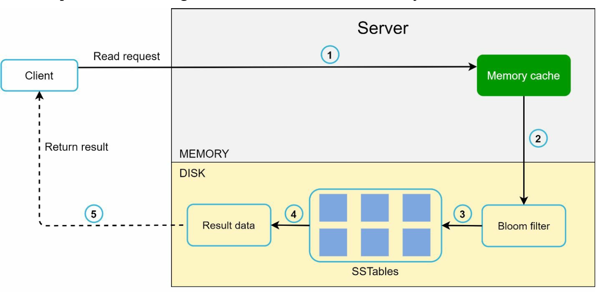
Bloom filter probabilistic structure hai: "definitely not present" ya "maybe present". False negative kabhi nahi, false positive thode — isse har SSTable scan karne se bach jaate hain.
| Goal / Problem | Technique |
|---|---|
| Big data store karna | Consistent hashing se load servers mein spread |
| High availability reads | Data replication, multi-DC setup |
| Highly available writes | Versioning + vector clocks se conflict resolution |
| Dataset partition | Consistent hashing |
| Incremental scalability | Consistent hashing |
| Heterogeneity | Consistent hashing (virtual nodes) |
| Tunable consistency | Quorum consensus (N, W, R) |
| Temporary failures | Sloppy quorum + hinted handoff |
| Permanent failures | Merkle tree (anti-entropy) |
| Data center outage | Cross-DC replication |
- Scope: value size (<10KB), read/write ratio, consistency tunable chahiye ya strong.
- Single server hash table → limit → distributed. CAP bolo aur decide karo: "AP with tunable consistency, Dynamo jaisa."
- Upar wali table ko spine bana ke chalo: partition → replication → quorum → conflicts → failures → storage engine.
- Har technique ke saath ek failure scenario: "s2 down → sloppy quorum + hinted handoff; disk gaya → Merkle tree se re-sync."
- Storage engine pe 1 minute: commit log + memtable + SSTable + Bloom filter.
Common follow-up questions
N=3, W=1, R=1 kab theek hai?
Jab latency sabse important aur stale reads acceptable (e.g. session cache, counters jo approximate chal jaate hain). Strong consistency nahi milegi.
Coordinator kaun banta hai?
Koi bhi node — client-side partition-aware driver seedha key ke primary replica ko hit kar sakta hai, ya load balancer kisi bhi node ko; wo node coordinator ban ke replicas ko forward karta hai.
Vector clock vs last-write-wins?
LWW simple aur small metadata, lekin concurrent writes mein data loss. Vector clocks conflicts preserve karte hain, client ko merge karna padta hai.
Deletes kaise propagate hote hain?
Tombstones — delete marker likha jaata hai taaki stale replica purani value ko "resurrect" na kare; compaction ke time (grace period ke baad) hataya jaata hai.
Key Takeaways
- Partition ke time C ya A chunna padta hai; CA real distributed systems mein nahi hota.
- Consistent hashing → partitioning + incremental scaling + heterogeneity.
- Replication: ring pe clockwise N unique physical servers, alag DCs mein.
- W + R > N → strong consistency; W/R ke saath latency trade-off.
- Vector clocks conflicts detect karte hain; resolution client karta hai.
- Gossip (detection), sloppy quorum + hinted handoff (temporary), Merkle trees (permanent).
- Write: commit log → memtable → SSTable. Read: memtable → Bloom filter → SSTables.